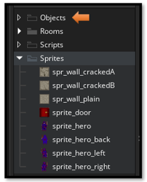
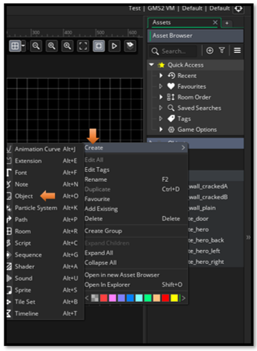
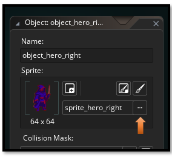

~3 Creating Objects~
1/26/2026

What is an Object?
This week, we will be taking a look at how we can create the objects. Objects are the true power houses in the game. As I have already said, a sprite is only the face of our game elements. But if you do not have an object, onto which you can put your sprite faces onto, you really don’t have too much of anything happening.
We can put code, or what Game Maker calls its scripts into these objects, and then they can walk, run, fight, and crash into things. Actually, crashing into things is a major way in which your objects can be told to react, and do something. For instance, crash into a wall —stop. Crash into a doorway —exit. Crash into a food item —gain life energy….and so on.
Creating an Object
You should have your sprites, and some folders already created. Now we want to create a new object. So, right click on the Object folder, and choose Create and then Object.
Right -click, Objects Folder – Create - Object

Create all of these Objects

Add a Sprite to each Object
To add a sprite to each of your objects, you will go to the workspace (in the center of your app), and then just choose the appropriate sprite for your object. Use the hamburger menu (the three dots) to browse for your sprite.

And that is all there is to creating an Object.